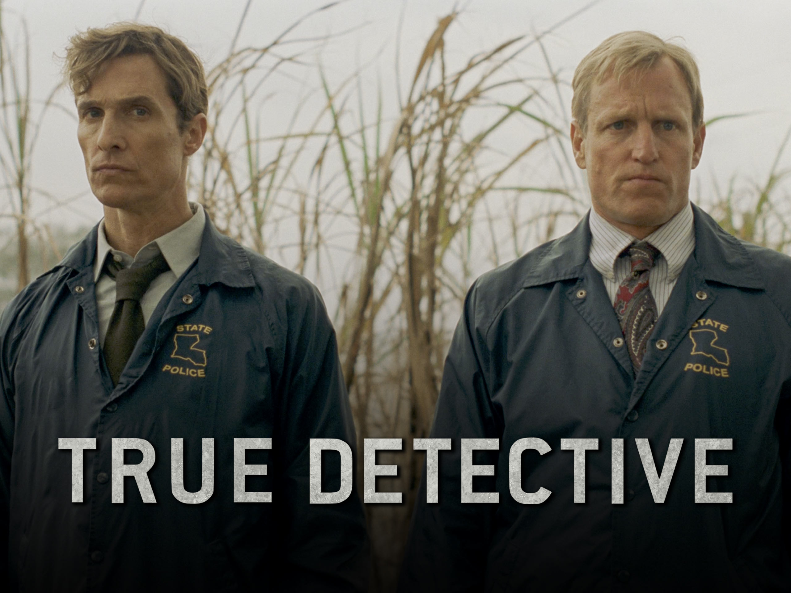
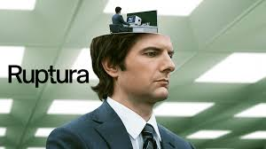
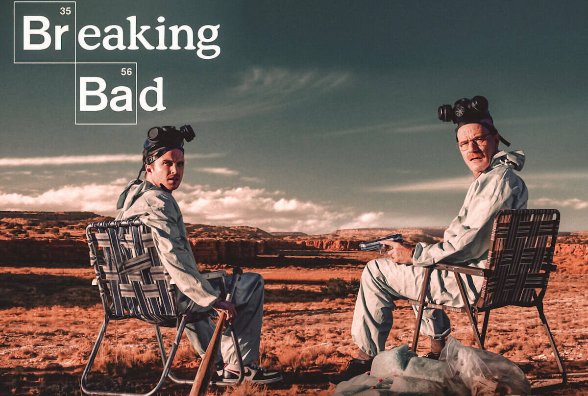
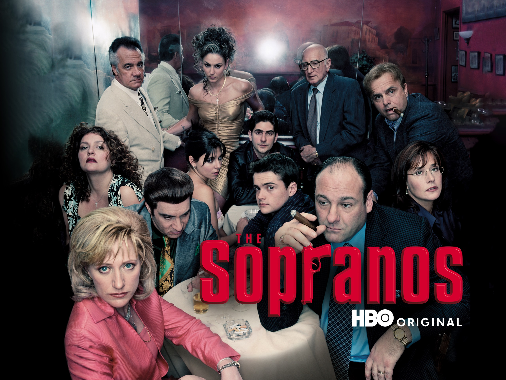

Explorador de Séries

True Detective
True Detective é uma série antológica de drama e crime, onde cada temporada apresenta uma nova história e personagens, explorando temas sombrios como moralidade, violência e corrupção. A primeira temporada, estrelada por Matthew McConaughey e Woody Harrelson, segue dois detetives investigando um misterioso caso de assassinatos rituais na Louisiana, ao longo de vários anos. A narrativa envolve flashbacks e uma atmosfera carregada de filosofia existencial. As temporadas subsequentes mantêm o foco em crimes complexos e personagens moralmente ambíguos, com novos elencos e cenários.
Ver Detalhes
Ruptura
Ruptura (originalmente Severance) é uma série de ficção científica e suspense que explora temas de identidade e controle. A trama gira em torno de um grupo de funcionários de uma empresa chamada Lumon Industries, que se submeteram a um procedimento chamado "ruptura", que separa suas memórias pessoais das profissionais. Como resultado, eles não têm consciência de suas vidas fora do trabalho, levando a uma existência limitada e controlada.
Ver Detalhes
Dark
Dark é uma série de ficção científica e mistério alemã que explora a interconexão de quatro famílias na pequena cidade de Winden, à medida que desvendam segredos sombrios e eventos misteriosos que ocorrem ao longo de várias gerações. A história começa com o desaparecimento de duas crianças, o que desencadeia uma série de eventos que revela a existência de um labirinto de viagens no tempo.
Ver Detalhes
Breaking Bad
Breaking Bad é uma série de drama que segue a transformação de Walter White, um professor de química do ensino médio que, após ser diagnosticado com câncer terminal, decide fabricar e vender metanfetamina para garantir o futuro financeiro de sua família. Com a ajuda de Jesse Pinkman, um ex-aluno, Walter mergulha cada vez mais fundo no mundo do crime, adotando o alter ego "Heisenberg". Ao longo da série, ele enfrenta cartéis de drogas, a polícia e dilemas morais, enquanto seu comportamento se torna cada vez mais perigoso e violento. A série explora temas como ambição, poder e a corrosão moral.
Ver Detalhes
Família Soprano
Família Soprano (The Sopranos) é uma série de drama que segue Tony Soprano, um chefe da máfia em Nova Jersey, enquanto ele equilibra as pressões de sua vida criminosa com as responsabilidades familiares. Ao longo da série, Tony enfrenta crises de ansiedade, o que o leva a procurar ajuda de uma terapeuta, a Dra. Melfi, enquanto tenta manter sua posição de poder no submundo. A série explora temas como lealdade, moralidade, violência e o impacto psicológico da vida no crime, ao mesmo tempo que oferece um retrato complexo de um homem dividido entre seus deveres familiares e seu papel como líder da máfia.
Ver Detalhes